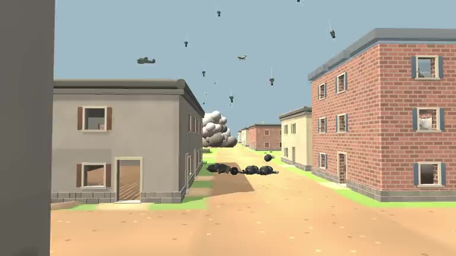
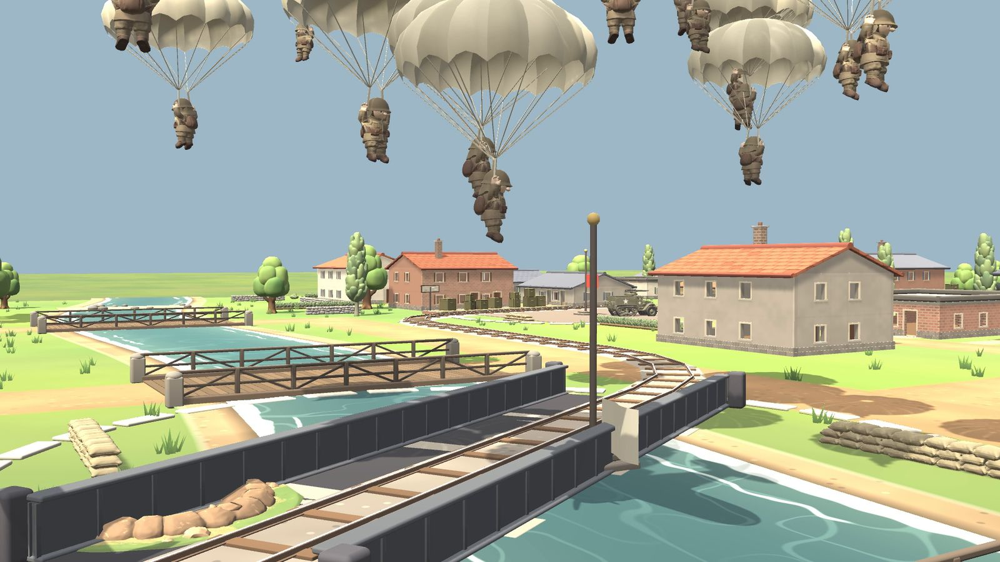
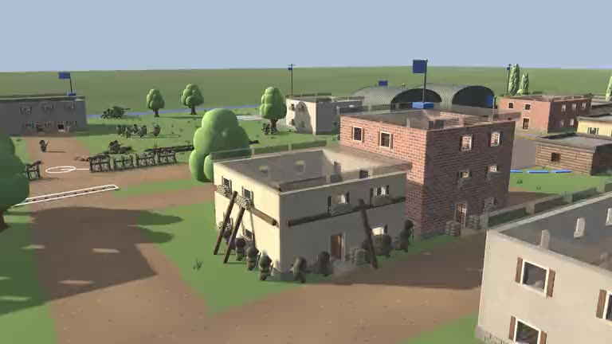
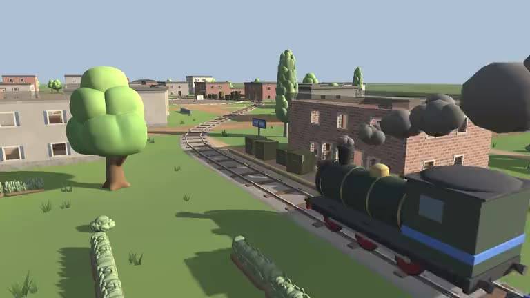
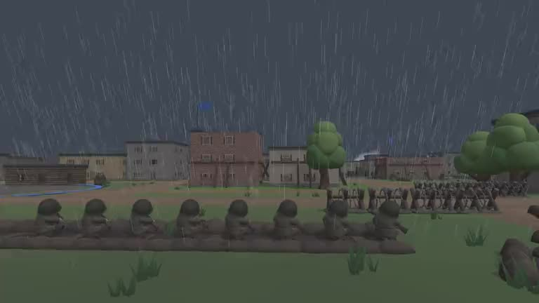
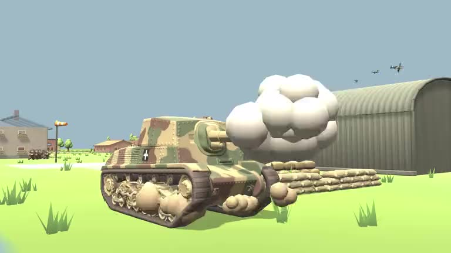
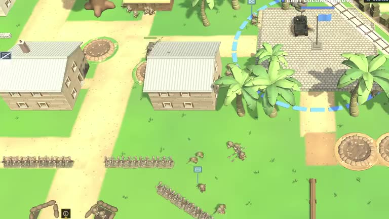
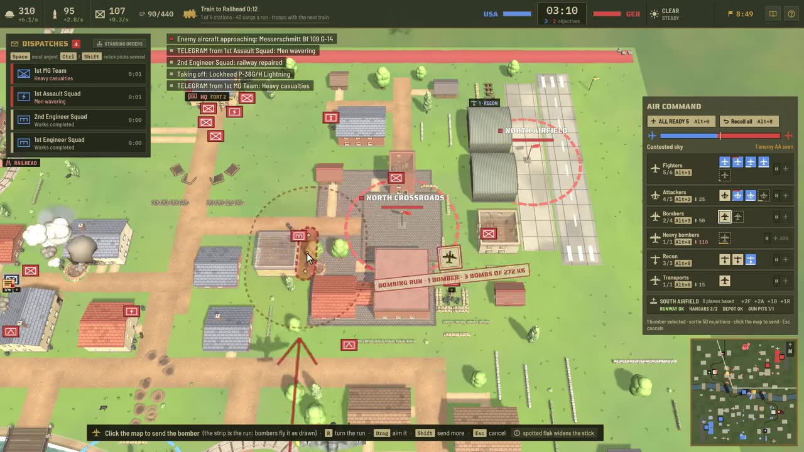
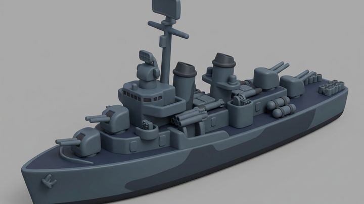

Call the bombers
Draw a strip and the heavy bombers fly it. Fighters fight for the sky, transports drop paratroopers where you aim, and storms keep them all on the ground.

Hold the towns, dig in, run the trains, call the bombers, answer the telegrams.
Browser demo and Windows download on itch.io. Pictures are the game's own frames unless marked Concept.
56 seconds, in-game footage. Music: "Machina Bellum", from the game's soundtrack.
FRONTS 1944 puts infantry, armour, artillery, engineers, trains and aircraft on one generated battlefield. Every map is new: villages, rivers, railways, airfields, weather and seasons.
What you see here is the current development build. The free demo on itch.io is an earlier version; the next public release brings it up to date.

Draw a strip and the heavy bombers fly it. Fighters fight for the sky, transports drop paratroopers where you aim, and storms keep them all on the ground.

Roofs open where you need to look in. Rooms, doors, grenades and smoke, and engineers who turn a farmhouse into a bunker.

Supply trains, stations, depots and trucks carry the ammunition forward. Blow a bridge and the other side waits for its repair crews.

Rain, snow, night and thunderstorms change what you can see, what can fly and how fast the line can move.

Japan, Italy and Hungary joined in November, each with its own soldiers, AI and an arsenal of historic weapons, vehicles, guns and aircraft.

Islands with lagoons, jungle, swamps and caves. Swimming tanks and landing craft, ordered from a Navy board.

Against the AI on a new map every time, from small to huge battlefields.
2v2 and 3v3 with friends over the internet or LAN, with a lobby, chat and room codes.
A campaign that teaches the war lesson by lesson, mission by mission.
Dig in and hold against wave after wave. How long can the line stand?
Every step of the game's development, taken or planned, pinned on one map. Open it and point at an objective.

Concept · aheadThe demo plays in your browser, nothing to install. The testers meet on Discord: bug reports, ideas, and match nights every Wednesday and Saturday, in English and Hungarian. The Steam page is on its way.